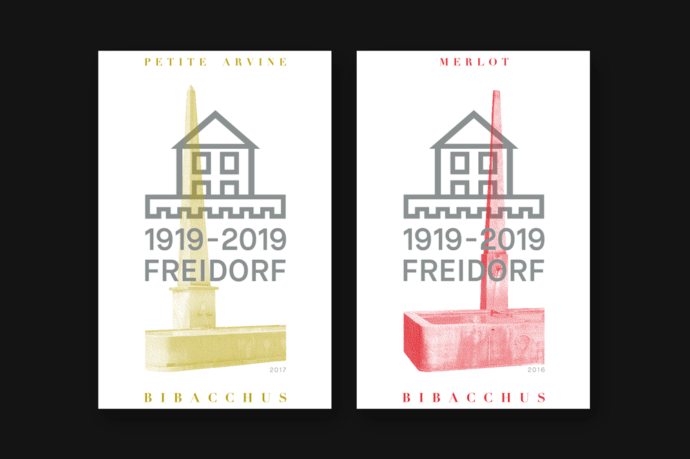
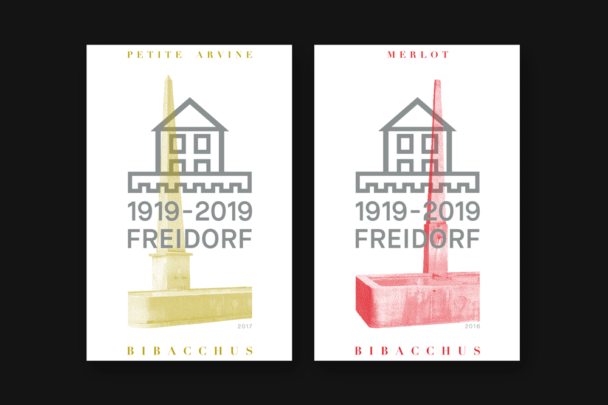

Freidorf – Weinetiketten
Konzept und Gestaltung
Zum 100-jährigen Jubiläum der Siedlungsgenossenschaft
Freidorf sollen zwei Weinetiketten gestaltet werden. Wein! – Meine ersten Gedanken dazu waren «Genuss», «Flüssigkeit» und «Quelle». Wie aber kann ich die Siedlungsgenossenschaft Freidorf mit diesen drei Begriffen in Verbindung bringen?
Nach längerem Recherchieren und ein paar guten Ideen stiess ich auf die beiden Brunnen, welche sich auf dem Freidorf-Areal befinden: der grössere der beiden steht beim zentralen Platz, der kleinere im «Klösterli» am südöstlichen Ende des Freidorfs. Brunnen = trinken. Ich hatte meine finale Idee gefunden. Beide Brunnen sollen für je einen Wein – rot oder weiss – stehen.
Rot und grün gerasterte Fotoaufnahmen der Brunnen, in Kombination mit dem Jubiläums-Logo in Pantone Silber ergeben eine schlichte aber elegante Weinetikette.
 
